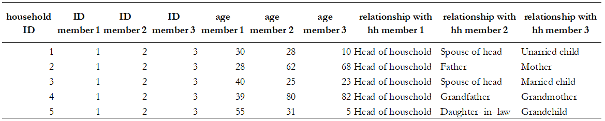
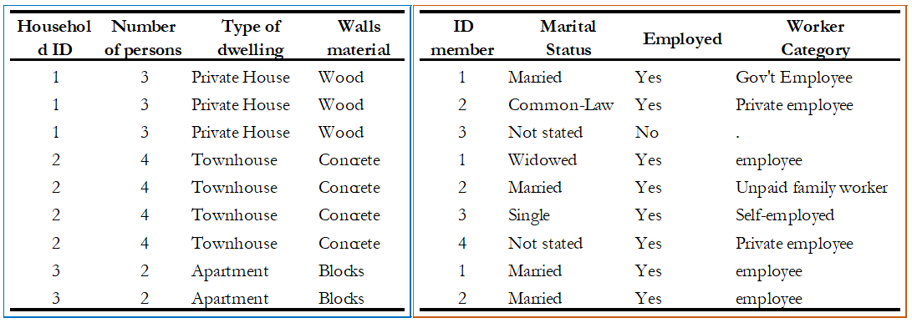
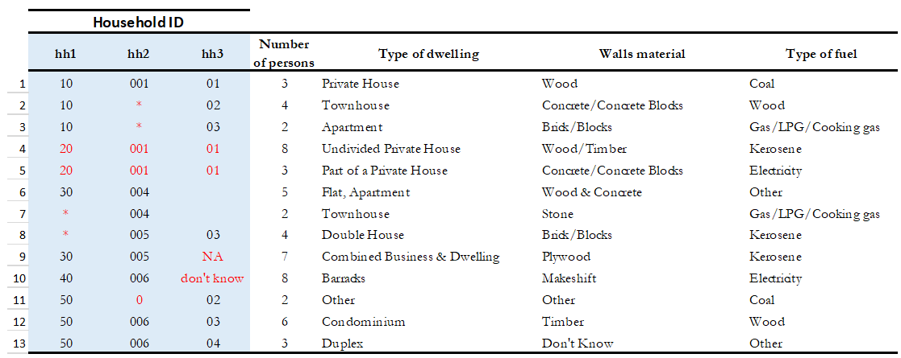
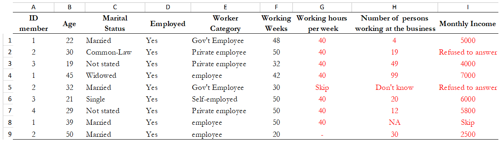

3. Gathering and preparing the data set¶
Gathering and preparing data is a process that requires great care. Prior to documenting a dataset, it is important to ensure that you are working with the most appropriate version of all the concerned data files. If the dataset is meant for public release, one should work with the final, edited, anonymous version of the dataset. If the dataset is being documented for archiving and internal use only, one may include the raw data as well as the final, fully edited files. The Metadata Editor provides you with the possibility of documenting the specificity of each version of the dataset.
Much of the quality of the output generated by the Editor will depend upon the prior preparatory work. Although the Editor can make some changes to the data, it is highly recommended that the necessary checks and changes be made in advance using a statistical package and a script. This ensures accurate and replicable results.
This section describes the various checks and balances involved in the data preparation process, such as: making a diagnostic on the structure of your data, cleaning it and identifying the various variables at the outset. Listed below are some common data problems that users encounter:
Absence of variables that uniquely identify each record of the dataset
Duplicate observations
Errors from merging multiple datasets
Encountering incomplete data when comparing the content of the data files with the original survey questionnaire
Unlabelled data
Variables with missing values
Unnecessary or temporary variables in the data files
Data with sensitive information or direct identifiers
Some practical examples using a statistical package are provided in Section A “Data Validations in Stata: Practical Examples.
Note
If you are working in a data archive, be careful not to overwrite your original variables. Since managing databases involves several data-checking procedures, archive a new version in addition to the original. Work on this new version, leaving the original data files untouched.
The following procedures are recommended for preparing your dataset(s):
3.1. Data files should be organized in a hierarchical format¶
Look at your data and visualize it to understand its structure. It is preferable to organize your files in a hierarchical format instead of a flat format. In a hierarchical format, columns contain specific information about all possible units of analysis and rows form the individual observations (households, establishments, products, communities/countries, or any combination of those). Hierarchical files are easier to analyse, as they contain fewer columns that store the same information and are more compact. A flat format contains multiple columns with information on only one specific unit of analysis, so the information becomes redundant. For example, the information provided in one column is about the household head, and the row provides information on the child in the household.
Table 1. Flat Format
Table 2. Hierarchical Format

Tables 1 and 2 illustrate the two data structures. They contain the same information about six people on age and their relationship with the head of the household. The flat dataset (Table 1) stores the information on each family member in a new column. Note that for every additional member or characteristic, the dataset gets flatter and wider. The hierarchical dataset (see Table 2) has one observation and one row per person. Each variable contains a value that measures the same attribute across people and each record contains all values measured on the same person across variables. For every additional member characteristic, the dataset maintains the same number of columns, gains additional rows and gets longer and less flat compared to Table 1. The first two columns of this dataset have a hierarchical structure, where the ID member column is nested inside the ID household column.
Hierarchical files are easier to manage. Suppose in this example that there were many characteristics measured for everyone, the hierarchical structure would be a more convenient format because for each new characteristic, the dataset creates only one additional column, whereas, in the flat structure, it would create as many columns as there are people in the data with such characteristics.
3.2. Datasets with multiple units of analysis should be stored in different data files¶
It is recommended that you store your data in different files when you have multiple observational units. For example, Table 3 shows a dataset that has both household-level data (columns on the type of dwelling and walls material) and individual-level data (columns on the marital status, work status, and worker category). Note that storing both levels of information in one dataset will result in a repetition of household characteristics for each household member. In Table 3, the information about the columns ‘type of dwelling’ and ‘wall material’ is repeated for everyone. Sometimes, this duplication is inefficient, and it is easier to have the dataset broken down by observational unit, into multiple files. In this example, it would be simpler to create two files: one for the household characteristics and another for the individual characteristics. The two files can be connected through a unique identifier, which in this case will be the household ID and member ID. We discuss the need for this unique identifier further on in this text as well.
Table 3. Single data set with more than one observational unit
3.3. Columns in a dataset should represent variables, not values¶
It is recommended that columns represent variables (e.g., sex, age, marital status) and rows represent observations (e.g., individuals, households, firms, products and so forth). In some datasets, columns instead of describing variables or attributes, describe values, which means that one variable is broken into segments and each one is stored in different columns. While this dataset structure can be useful for some analysis, the standard data structure where columns are variables and not values is the norm.
For example, Table 4 (options 1 and 2) gives information at the individual-level on marital status, relationship with the head of the household and age. The difference between both tables is how the variable ‘age’ is reported. Option 1 had broken the variable ‘age’ into segments. This practice makes your data: i) messier, it has values of the variable as headings, and ii) inefficient, it increases the size of the dataset. Option 2 is recommended since there is only one heading and store of the information occupies less space, allowing the user to identify the structure of the data in a clear manner.
Table 4. Data Structures: Hypothetical datasets

3.4. Each observation in every file must have a unique identifier¶
Before you check for uniqueness of the identifiers in your files, you need to figure out the unit of analysis. Even if you are not the data producer, it is often easy to identify it. You can always review the documentation to see if the information has been provided. Below, some examples of units of analysis:
Table 5. Unit of Analysis by Study type

Once you recognize the unit of analysis, the next step is to identify the column that uniquely identifies each record. If a dataset contains multiple related files, each record in every file must have a unique identifier. The data producer can also choose multiple variables to define a unique identifier. In that case, more than one column in a dataset is used to guarantee uniqueness. These identifiers are also called key variables or ID variables 2. The variable(s) should not contain missing values or have any duplicates. They are used by statistical packages such as SPSS, R or Stata when data files need to be merged for analysis
The absence of a unique identifier is a data quality issue, so one needs to ensure that the unique IDs remain fixed/present during the data cleaning process. If this correction is not possible, the archivist should note the anomalies in the documentation process.
Best Practices
|
- Example
Suppose the unique identification of a household is a combination of of variables PROV (Province), DIST (District), EA (Enumeration Area), HHNUM (Household Number). Options 2 and 3 are recommended. Note that if option 3 is chosen, it is crucial to preserve (but not distribute) a file that would provide the mapping between the original codes and the new HHID.
|
|
|
|||
|---|---|---|---|---|---|
PROV |
DIST |
EA |
HHNUM |
HHID |
HHID |
12 |
01 |
014 |
004 |
1201014004 |
1 |
12 |
01 |
015 |
001 |
1201015001 |
2 |
13 |
07 |
008 |
112 |
1307008112 |
3 |
Etc |
Etc |
Etc |
Etc |
Etc |
Etc |
Once you recognize the unit of analysis and the variable that uniquely identifies it, the following checks are suggested:
Even if the data set has a variable with a label “unique identifier”, it is important to confirm that this variable truly does uniquely identify each record. To confirm or even to find out what the unique identifier is, you can make use of the -duplicate- function in SPSS or the -isid- command in Stata (for R, do as shown in Table 6). For more details, refer to Example 1 and Example 2 of Section A.
Table 6. Check for unique identifiers: STATA/R/SPSS Commands
STATA |
R |
SPSS |
use “household.dta”
isid key1 key2
|
my_data <-
load("household.rda")
id <-c( "key1" , " key2")
library(eeptools)
isid(my_data, id, verbose=FALSE
verbose = FALSE)*
|
Load dataset and choose from the menu:
|
Finally, check that the ID variable for the unit of observation doesn’t have missing or assigned zero/null values. Ensure that the datasets are sorted and arranged by their unique identifiers.
Table 7 below gives a hypothetical example. In this dataset, the highlighted columns (hh1, hh2, hh3) are the key variables, which means that they are supposed to make up the unique identifier. However, looking at those variables, we can identify some problems: the key variables do not uniquely identify each observation as they have the same values in rows 4 and 5, they also have some missing values (represented by asterisks), assigned zero values and some null values (those that say NA, don’t know). All these issues suggest that those variables are not the key variables, and one needs to go back and double-check the data documentation. Alternatively, the archivist could check with the data producer and ask them how to fix these variables, in case those are indeed the key variables.
Table 7. Check for unique identifiers: Hypothetical data set
Example 3 provides further details and describes the steps involved in performing a validation when the identifier is made of multiple variables (see Section A).
3.5. Identifying duplicate observations¶
One way to rule out problems with the unique identifier is to check if there are duplicate observations (records with identical values for all variables, not just the unique identifiers). Duplicate observations can generate erroneous analysis and cause data management problems. Some possible reasons for duplicate data are, for example, the same record being entered twice during data collection. They could also arise from an incorrect reading of the questionnaires during the scanning process if paper-based methods are being used.
Identifying duplicate observations is a crucial step. Correcting this issue may involve eliminating the duplicates from the dataset or giving them some other appropriate treatment.
Statistical packages have several commands that help identify duplicates. Table 8 shows examples of these commands in STATA, R and SPSS. The STATA command -duplicates report- generates a table that summarizes the number of copies for each record (across all variables). The command -duplicates tag- allows us to distinguish between duplicates and unique observations. For more details, refer to Example 4 of Section A.
Table 8. Check for duplicates observations: STATA/R/SPSS Commands
STATA |
R |
SPSS |
use “household.dta”
duplicates report
duplicates tag,
generate(newvar)
|
my_data <-
load("household.rda")
household[duplicated(household),]
|
Load dataset and choose from the menu:
|
3.6. Ensure that each individual dataset can be combined into a single database¶
For organizational purposes, surveys are often stored in different datasets. Therefore, checking the relationship between the data files is an essential step to keep in mind throughout the data validation process. The role of the data producer is to store the information as efficiently as possible, which implies storing data in different files. The role of the data user is to analyse the data as holistically as possible, which could sometimes mean that they might have to join all the different data files into a single file to facilitate analysis. It is essential to ensure that each of the separate files can be combined (merged or appended depending on the case) into a single file, should the data user want to undertake this step.
Use statistical software to validate that all files can be combined into one. For a household survey, for example, verify that all records in the individual-level files have a corresponding household in the household-level master file. Also, verify that all households have at least on e corresponding record in the household-roster file that lists all individuals. Below, some considerations to keep in mind before merging data files:
The variable name of the identifier should be the same across all datasets.
The ID variables need to be the same type (either both numeric or both string) across all databases.
Except for ID variables, it is highly recommended that the databases don’t share the same variable names or labels.
- Example
A household survey is disseminated in two datasets; one contains information about household characteristics and the other contains information on the children (administered only to mothers or caretakers). To build a dataset containing all the information about the household characteristics, including where the children live, one needs to combine these files. Users are thus assured that all observations in the child-level file have corresponding household information.
Joining data files: Hypothetical data set
Statistical packages have some commands that allows us to combine datasets using one or multiple unique identifiers. Table 9 shows examples of these commands/functions in STATA, R and SPSS. For more details, refer to Example 5 of Section A.
Table 9. Joining data files: STATA/R/SPSS Commands
STATA |
R |
SPSS |
use “household.dta”
merge 1:m hh1 hh2 hh3
using
"individuals.dta"
|
household <- load("household.rda")
individuals <- load("individuals.rda")
md <- merge(household, individuals,
by = c("hh1", "hh2", “hh3”),
all =TRUE)
|
Load dataset and choose from the menu:
|
Panel datasets should be stored in different files as well. Having one file per data collection period is a good practice. To combine the different periods of a panel dataset, the data user could merge them (Adding variables to the existing observations for the same period) or append them (Adding observations for a different period to the existing variables). To make sure that panels can be properly appended, the following checks are suggested:
Check for the column(s) that identifies the period of the data (Year, Wave, Serie, etc.).
The variable names and variable types should be the same across all datasets.
Ensure that the variables use the same label and the same coding across all datasets.
In SPSS, use the function “Append new records” and in STATA the command -append- to combine datasets vertically.
3.7. Check for variables with missing values¶
Getting data ready for documentation also involves checking for variables that do not provide complete information because they are full of missing values. This step is important because missing values can have unexpected effects on the data analysis process. Typically, missing values are defined as a character (.a, .b, single period or asterisks), special numeric (-1, -2) or blanks. Variables entirely comprised of missing values should ideally not be included in the dataset. However, before excluding them, it is useful to check whether the missing values are expected according to the questionnaire, and the skip patterns.
For example, a hypothetical household survey at the individual-level (Table 10) provides information about the respondent’s employment status. The survey identifies if the respondent is employed in Column D, and then provides information about the worker category in Column E, but only for those who reported being employed in Column D. This means that those who answered ‘unemployed’ in column D should have a valid missing value in column E. In other words, this is a pattern in the missing values that should be observed and duly noted.
On the other hand, Columns F and G are used to determine if the people who are not employed are looking for a job and are actively seeking it. These questions are not asked to the employed people (those who answered “yes” in Column D), which mean that again, the missing values in those columns correspond with what is expected. However, Column H contains information for all employed individuals, so missing values in this column suggest that there is a problem in the data and should be addressed. Therefore, one should not blindly delete missing values at the outset without checking for these patterns.
Table 10. Checking for Missing Values: Hypothetical data set

In SPSS, use the function “Missing Value Analysis” and in R, do as shown in Table 11. You can also use the STATA command -misstable summarize- that produces a report that counts all the missing values. You can also use the -rowmiss()- command with -egen- to generate the number of missing values among the specified variables. For more details, refer to Example 6 of Section A.
Table 11. Counting Missing Values: STATA/R/SPSS Commands
STATA |
R |
SPSS |
use “individual.dta”
misstable summarize
|
my_data <-
load("individual.rda")
colSums(is.na(individual))
colMeans(is.na(individual))
|
Load dataset and choose from the menu:
|
Best Practices Since there are different reasons for missing values, data producer should code them with negative integers or letters to distinguish the missing values and valid data. For instance, (− 1) might be the code for “Don’t Know”, (-2) the code for “Refused to Answer” and (-9) code for “Not Applicable”. |
3.8. Check Improper value ranges¶
It is helpful to generate descriptive statistics for all variables (frequencies for discrete variables; min/max/mean for continuous variables) and verify that these statistics look reasonable. Just as there are variables that must take on only specific values, such as “F” and “M” for gender, there are also some variables that can take on several values (such as age or height). However, those values must fit a particular range. For example, we don’t expect negative values, or typically see values over 115 years for age.
Values for categorical variables should be guided by the questionnaire (or separate documentation for constructed variables). If we have an education variable that has 9 response options in the questionnaire, the corresponding ‘education’ variable in the dataset should have 9 categories. We should not observe more than 9 unique values for this variable. Similarly, for any questions in the survey for which the options are only “yes”, “no” and “other”, we should not observe more than these 3 unique values. When out of range values exist, this might signal data cleaning issues.
Table 12 shows examples of some commands/functions in STATA, R and SPSS.
Table 12. Generate descriptive statistics: STATA/R/SPSS Commands
STATA |
R |
SPSS |
use “individual.dta”
summarize
|
individual <-
load("individual.rda")
summary(individual)
|
Load dataset and choose from the menu:
|
3.9. Verify that the number of records in each file corresponds to what is expected¶
The technical documentation helps to form some expectations about the size of the dataset. Make sure that in all the files, the number of records is the same as (or is similar to) what is explicitly stated in the sample design of your survey.
Suppose that you have a household survey and according to the documentation the sample size is 50,321 households. Consequently, the file that contains the household-level information should have a similar number of observations. When this is not the case, you should be able to account for this difference in data documentation.
On the other hand, even if the number of individual records is not available in the documentation, you can still perform a rough check on the files. For example, if you have the household level file and the person level file, the latter should be between 2 or 6 times larger than the former, depending on the average household size in the country for which the information has been collected. Another example is to compare the household level file of an expenditure survey with the consumption level file (at the product-level).
The latter should have n times the number of observations than the former, where n is the average number of products that each household records in the survey.
3.10. Datasets must contain all variables from the questionnaire and be in a logic sequence¶
Verify the completeness of your data files by comparing the content of these files with the survey questionnaire. All variables in the questionnaire should appear in the dataset, except those excluded on purpose by the producer of the data because of reasons of confidentiality (see numeral 1.15). Cross-checking with the questionnaire(s) is needed to ensure that all sections are included in the dataset.
Additionally, it is a good practice to make sure that the database is sorted in the same order as the questionnaire. This practice will help users navigate seamlessly across the dataset using the questionnaire as a route map.
The Stata command -describe- displays the names, variable labels and other characteristics, which helps us verify that no variables have been omitted in the database. It simultaneously confirms that all variables are correctly ordered. Refer to Example 7 of Section A for further details.
3.11. Include the relevant weighting coefficients and variables identifying the stratification levels¶
All data files of a sample survey should have clearly labelled variable(s) with information on the survey weights. Sample surveys need to be representative of a broader population for which the data is collected, and the user needs the survey weights for almost every analysis performed. In the case of household surveys, the survey weights are equal among members of the same household but differ across households. Weights are positive and strictly higher than zero. They should not have a larger value than the population for which the survey is representative.
A more detailed description of how the survey weights would look like should be provided in the documentation of the survey. Based on it, you can perform some basic range checks. Notice that Census datasets do not need weights since a census collects data on all the individuals in the population. There are however some exceptions, for example in the case of IPUMS, the data collected are not full censuses but census samples, so weights are required in this context.
Additionally, for sample surveys, verify that the variables identifying the various levels of stratification and the primary sampling unit are included and easily identifiable in at least one of the data files. These variables are needed for the calculation of sampling errors.
3.12. Variables and codes for categorical variables must be labelled¶
Variable labels
Labels should be short and precise. They should provide a clear indication of what information is contained in the variables. Variable labels are brief descriptions or attributes of each variable. Without variable labels, users are not able to link the variables in the database to the questions of the questionnaire. So, one should ensure that all variables are labelled.
Additionally, even if variables are fully labelled, the following practices must be considered:
Variable labels can be up to 80 characters long in Stata and 255 in SPSS, however, it is recommended that labels be informative, short and accurate.
It is a common practice to have a literal question from the survey as a variable label. However, the literal questions are usually longer than the maximum number of characters, so this is not an advisable practice.
The same label should not be used for two different variables.
Value labels
Label values are used for categorical variables. To ensure the correct encoding of data, it is important to check that the stored values in those variables correspond to what is expected according to the questionnaire. In the case of continuous variables, we also suggest the checking of ranges. For instance, if the question is about the number of working hours, the variable should not have negative values.
You can compare variable labels in the dataset to those in the questionnaire using the –codebook- Stata command or –labelbook-. Refer to Example 8 of Section A for further details.
3.13. Temporary, calculated or derived variables should not be disseminated¶
Remove all unnecessary or temporary variables from the data files. These variables are not collected in the field and present no interest for users.
The data producer could generate variables that are only needed during the quality control process but are not relevant to the final data user. For example, the variable “_merge” in Stata is generated automatically after performing the check described in the Numeral 1.6, when the data producer wants to see if the datasets match properly. Variables that group categories of a question, dummy variables that identify a question’s category are all variables produced during the coding process that are not relevant once the analysis is completed.
There are cases in which calculated variables may be useful to the users, so they must be documented in the metadata. For example, most Labor Force Surveys (LFS) contain derived dummy variables to identify the sections of the population that are employed or unemployed. These variables are generated using multiple questions from the dataset and are essential elements of any LFS. Most data users prefer to make use of them instead of computing them on their own, to reduce the risk of error. This is a strong argument to make a case for keeping these variables in the dataset, despite them being a by-product of other original variables.
To be useful, those variables that remain in the dataset must be well documented, else they, they may be useless to or misunderstood by users.
3.14. Check that the data types are correct¶
Do not include string variables if they can be converted into numeric variables. Look at your data and check the variables’ types, particularly for those that you expect to be numeric (age, years, number of persons/employees/hours, income, purchases/expenditures, weights, and so forth). If there are numeric variables stored as string variables, your data needs cleaning.
For example, Table 13 contains a data set at the individual-level with some variables that should be numeric. The columns B (Age) and E (Working Weeks) are stored as numeric variables, which is fine. However, the variables ‘Number of working of hours per week’ (Column G), ‘Number of persons working at the business’ (Column H) and ‘Monthly Income’ (Column I) are loaded as strings because there are non-numeric values (don’t know, skip, refused to answer) and some missing values present. Those variables need to be cleaned and converted from string variables to numeric variables.
Table 13. Checking Data Types: Hypothetical data set
Statistical packages have some commands that allows us to make such conversions. Table 14 shows examples of these commands/functions in STATA, R and SPSS.
Table 14. Convert string variables to numeric: STATA/R/SPSS Commands
STATA |
R |
SPSS |
use “individual.dta”
destring (varname),
{generate|replace}
|
individual <-
load("individual.rda")
individual$varname <-
as.numeric(individual$varname)
|
Load dataset and choose from the menu:
|
3.15. Datasets must not have directed identifiers¶
One must verify that in all data files, sensitive information or direct identifiers that could reveal the identity of the respondent directly (names, addresses, GPS coordinates, phone numbers, etc.) have been removed. Check to ensure this information is not in the dataset(s). If it is, those variables need to be removed from shared datasets.
Keep in mind that if you are preparing a dataset for public release, you need a cleaned, anonymous dataset. Removing all direct identifiers is the first key step to ensuring the anonymity of the participants. However, before you start any privacy procedures, you should always check your data.
For more information on how to apply statistical disclosure control (SDC) methods to data before release, see the document “Introduction to Statistical Disclosure Control (SDC)” available at http://ihsn.org/sites/default/files/resources/ihsn-working-paper-007-Oct27.pdf
3.16. Compress the variables to reduce the file size¶
Compress the variables consist of reducing the size of the data file without loss of precision or modifying the information that it provides. Listed below are some reasons why compressing a data set may be a useful practice for at least three reasons: First, it makes faster the process of creating backups, uploading and downloading data files from your data repository or any Survey Catalog. Second, it reduces the time that data users will need to spend working with the data. Additionally, it will make the data more accessible to the different type of users; sometimes the data size will impose restrictions on those users who lack high computational power. Third, it will help to free up disk space in the server where you store your data
- Example
Table 15 shows two versions of one dataset that provides individual-levelinformation about the year of the first union, age, school attendance,and health insurance. There is no difference in the appearance of both datasets. However, version 1 was saving uncompressed and version 2 compressed. In the uncompressed version, the variables “ID” and “Year” are stored as double, which means that they can store number with high decimal precision, but they are designed to only record information of integer numbers between -32,767 and 32,740. So, the compressed version changed the storage type of these variables to int and saves 6 bytes per observation. Similarly, other variables like “age” and “school attendance” are stored as a byte in the compressed version, which saves 7 bytes per observation when are compared to the uncompressed version. Let’s suppose that one has a data set with 500 variables like these, the total savings would be 3,500 bytes per observation; if this data set has 50,000 observations, it means that the savings in memory space would be around 175 megabytes.
Table 15. Compressing the Variables: Hypothetical data set

Use the compress command in Stata, or the compress option when you save a SPSS data file.
- Suggestion
If you are in the process of establishing a data archive and plan to document a collection of surveys, undertake a full inventory of all existing data and metadata before you start the documentation. Use the IHSN Inventory Guidelines and Forms to before you start the documentation. Use the IHSN Inventory Guidelines and Forms to facilitate this inventory (available at www.surveynetwork.org).
Suggestion: If you are in the process of establishing a data archive and plan to document a collection of surveys, undertake a full inventory of all existing data and metadata before you start the documentation. Use the IHSN Inventory Guidelines and Forms to before you start the documentation. Use the IHSN Inventory Guidelines and Forms to facilitate this inventory (available at www.surveynetwork.org). |
- 2
See section 3 – Importing data and establishing relationships for more information on key variables.
- 3
In Stata, this can be done through the use of the group function from the egen command. For example, to create a variable hhid based on a combination of variables province, district, ea and hhnum, use the command “egen hhid=group(province district ea hh_num)”.